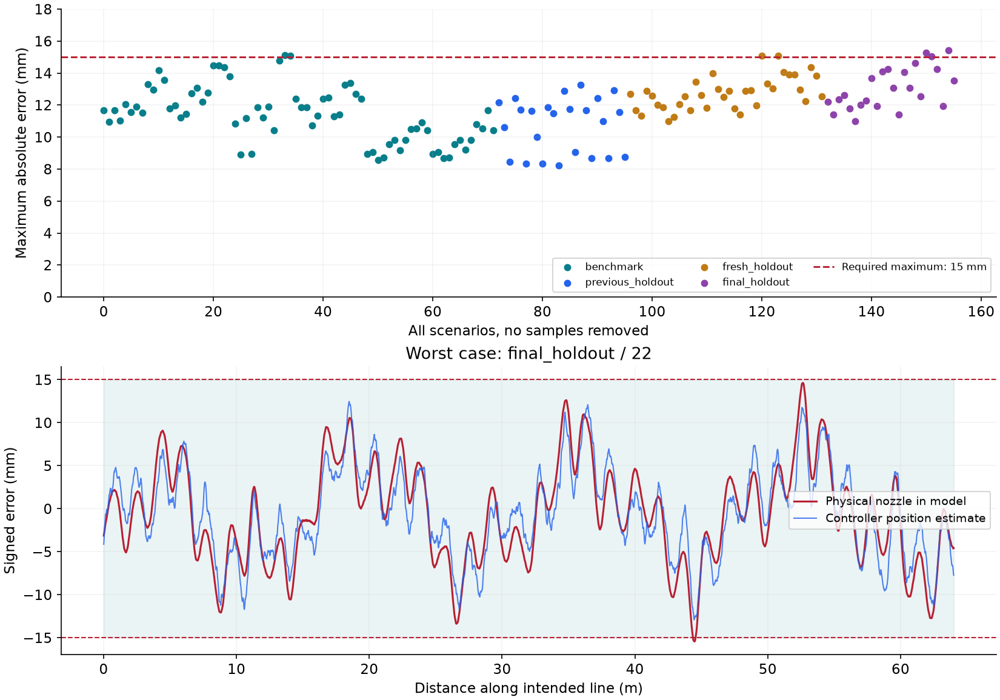

未达到全场景 1.5 cm 要求 · 149/156 组通过 · 最坏 15.436 mm
验收标准为完整正式直线区间的最大绝对喷嘴横偏 ≤ 15 mm。P95、平均值、摆幅改善不能代替最大值；停喷、暂停和漏喷均不能记作整条线完成。当前为未部署的源码候选，没有生成“已达标”升级包。
12 mm 保护边界不等于地面 15 mm 保证。它只预留 3 mm 控制余量，尚未验证喷嘴高度、喷射方向、关泵断料时间与独立地面定位误差。
| 场景集合 | 最大误差达标 | 最坏最大值 |
|---|---|---|
| benchmark | 70/72 | 15.115 mm |
| previous_holdout | 24/24 | 13.281 mm |
| fresh_holdout | 34/36 | 15.085 mm |
| final_holdout | 21/24 | 15.436 mm |
前三组已用于开发或根据暴露的失败调参；final_holdout 在最终参数选择后固定，未用于调参。模型覆盖执行延迟、增益、横移、转向扰动和定位噪声，模型尚未经过该草地准确辨识。这里执行实际源码控制组件，保留所有计划喷线样本；保护暂停不用于删除超标点。
完整 PathTracker 另外 12 组常规闭环模型：12/12 达标，最坏 9.191 mm。使用实际路线的 0.4 m 线尾退出距离，完整覆盖 64 m 计分区间。它不替代含喷线资格的整任务验收。
独立速度敏感性对照：恒定 0.45 m/s 有 150/156 组达标，最坏 16.134 mm，仍不合格。该对照没有改变源码的作业速度或 0.5 m/s 验收要求。

| 超标场景 | 工况 | 最大值 | 发生位置 |
|---|---|---|---|
| benchmark / 33 | rtk_wave_3m | 15.115 mm | 10.74 m |
| benchmark / 34 | rtk_wave_3m | 15.066 mm | 0.31 m |
| fresh_holdout / 24 | rough | 15.085 mm | 47.29 m |
| fresh_holdout / 27 | rough | 15.085 mm | 8.82 m |
| final_holdout / 18 | rough | 15.257 mm | 44.54 m |
| final_holdout / 19 | noise | 15.046 mm | 1.83 m |
| final_holdout / 22 | rough | 15.436 mm | 44.49 m |
27 份、29 个记录段全部保留，其中 26 段有可比较的直线输入。保留原速度、原质量判定和当时输入，不把 0.8 m/s 记录重标成 0.5 m/s。
控制位置与几何位置的 P95 差值逐段中位数：6.20 → 1.26 mm；过线后仍判断在旧侧累计：43.38 → 1.56 秒。历史实跑轨迹不变，以上不能当作修改后的新轨迹。
1 failed, 535 passed, 363 subtests passed in 72.18s (0:01:12)
已知失败为旧 RunupStart 对照断言，原基线也失败，未删测试掩盖。精度保护、断点、模式范围、坏数据冻结和参考反向等新增回归另见日志。
草地轮胎/底盘的精确响应、喷嘴离地高度和喷射轴、断料延迟仍未校准。应使用同线 0.5 m/s 往返实测、保留原始定位/IMU/轮速/指令/喷线状态，并用独立测量比较漆线中心与设计线；不能用控制器自己报告的横偏自证达标。